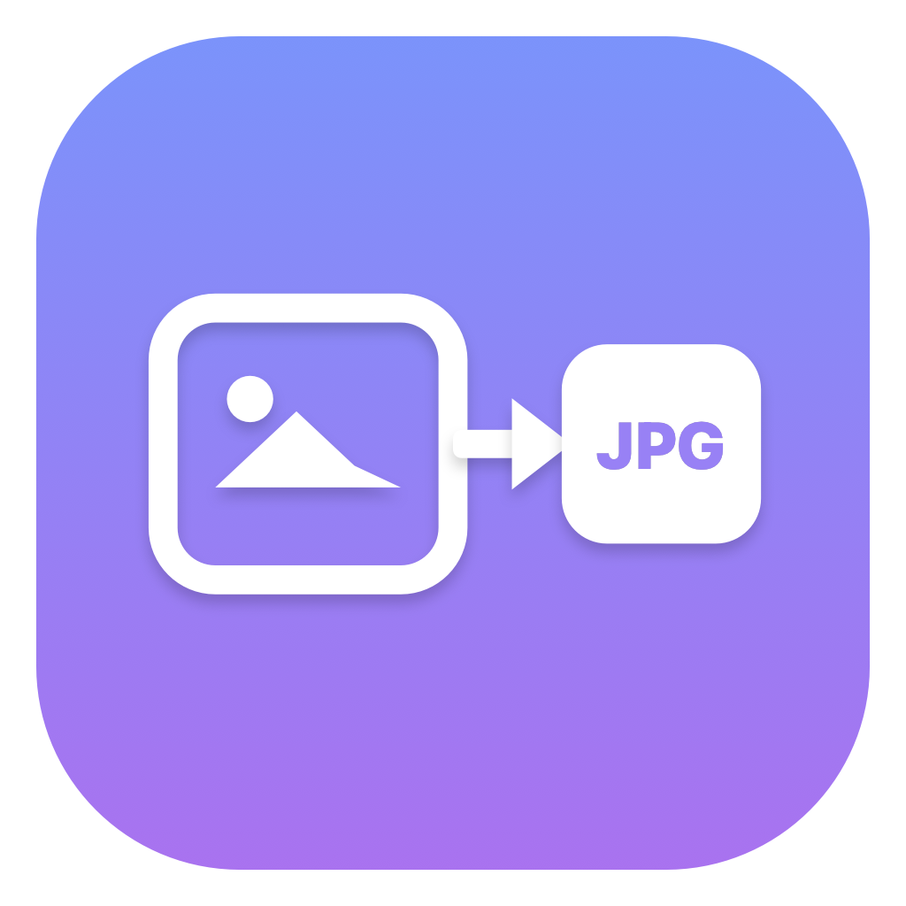
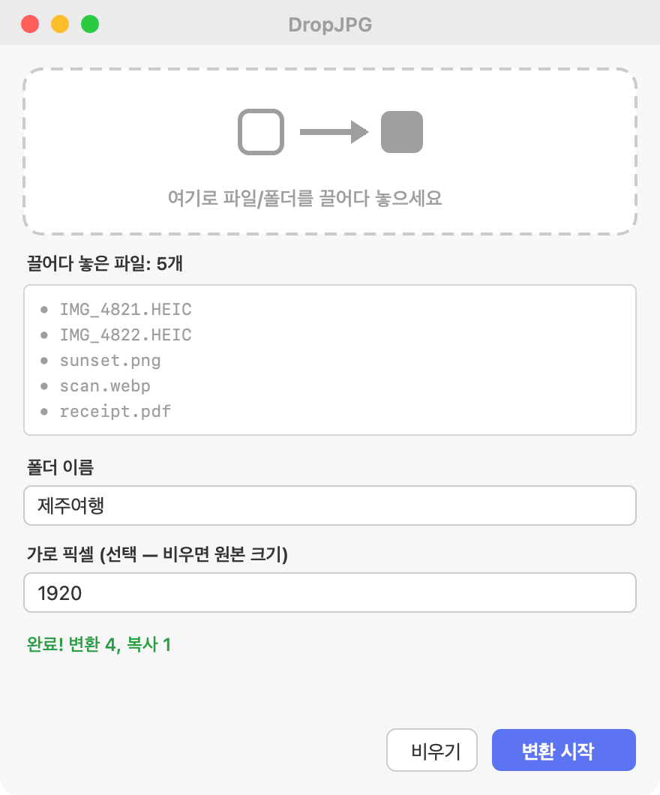

Drag, drop, done.
Convert any image — including HEIC — to JPG, right from your menu bar.
macOS 12+ · Apple Silicon & Intel · 100% on-device · free & open source
No uploads, no accounts, no nonsense. It just converts.
JPEG, PNG, GIF, TIFF, WebP, and Apple HEIC/HEIF — all to clean JPG via the built-in macOS engine.
Drag a whole folder; it recurses into subfolders and handles everything at once.
Output lands in ~/Desktop/<name>/ numbered name_001.jpg, 002…
Set a target width in pixels; aspect ratio is preserved automatically.
Everything runs locally. Your photos never leave your Mac. Originals are kept untouched.
No Dock clutter. Click the icon, drop, name, convert. The window stays on top.
Drop → name → convert. That's the whole app.

설치 60초 · It's not signed with a paid Apple cert, so one extra step on first launch.
Grab DropJPG.dmg and drag DropJPG.app into Applications.
Double-click 먼저 실행 - 설치도우미.command inside the DMG, or run in Terminal:
xattr -dr com.apple.quarantine /Applications/DropJPG.app
Open DropJPG — its icon appears in the menu bar. Click it → 사진 변환 → drop your images.
왜 추가 단계? 개발자 인증서($99/년)가 없어 macOS가 차단합니다. 위 명령은 "인터넷에서 받음" 격리 속성만 제거합니다 — 그 외엔 아무것도 바꾸지 않습니다.